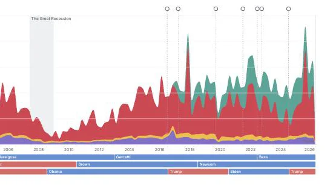
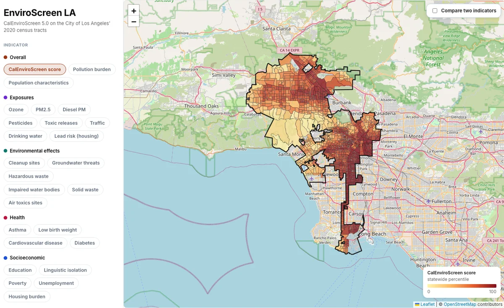
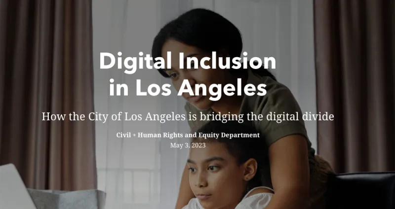
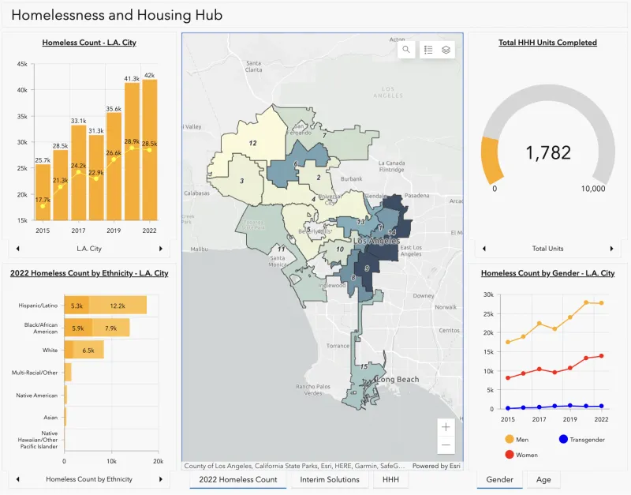
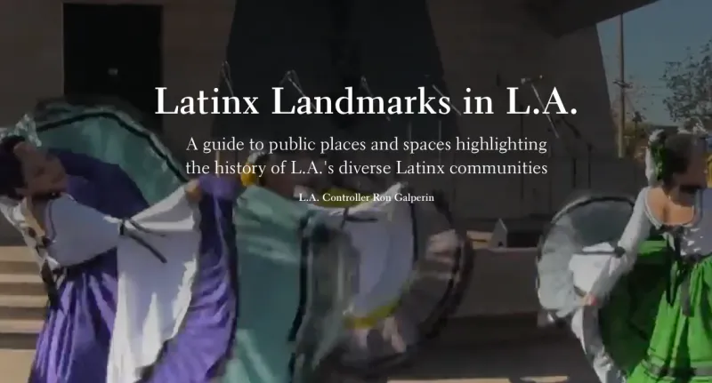
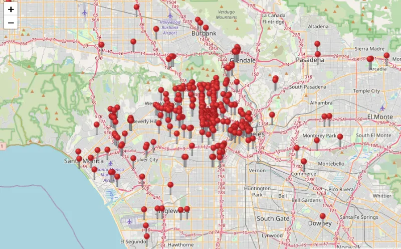
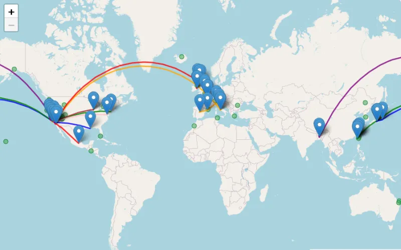

Projects
-

Permitted & Completed Housing in the City of Los Angeles
An interactive dashboard of every home the City of LA has permitted since 2001 and completed since 2005, by neighborhood and housing type, alongside interest rates, administrations, and major events. Updated weekly from LADBS data.
-

EnviroScreen LA
CalEnviroScreen 5.0 indicators mapped on the City of Los Angeles' 2020 census tracts. Switch between pollution, health, socioeconomic and demographic indicators on one map, filter by percentile, or compare two indicators side by side. Built for LA's organizers and decision makers.
-
Progress & Gaps in the City's Workforce
Using the LA City Controller's 2022 Payroll Data, I conducted a simple analysis of workforce demographics and total pay by gender and ethnicity.
-

Digital Inclusion in Los Angeles
This StoryMap examines the issue of the digital divide in Los Angeles. As technology grows in every facet of our lives, it's imperative that everyone has access to technology. This resource analyzes the inequity across Los Angeles, and what the City of Los Angeles is doing to bridge the digital divide.
-
Violence Against Black & Latina Women
This report recognizes growing violence against women of color and acknowledges opportunities to bolster safety for communities most impacted by violence. As a co-author, I analyzed LAPD data to report the crime statistics of violence against women across the City of LA.
-

Homelessness & Housing Hub
This dashboard was created to visualize progress being made in regards to Prop HHH, and various statistics/resources pertaining to the issue of homelessness in Los Angeles. Please note that this dashboard was retired on December 2022.
-

Latinx Heritage Month 2022
This StoryMap was created for Latinx Heritage Month in 2022. It provides a guided tour throughout Hispanic Heritage locations in LA, and data visualizations highlighting pay equity gaps among Hispanic City employees.
-

Every Restaurant I've Ever Eaten At
I started mapping every restaurant or venue I've ever eaten at. Check it out!
-

Travel Map
Where have I gone? Where do I want to go? Here's a map for that.